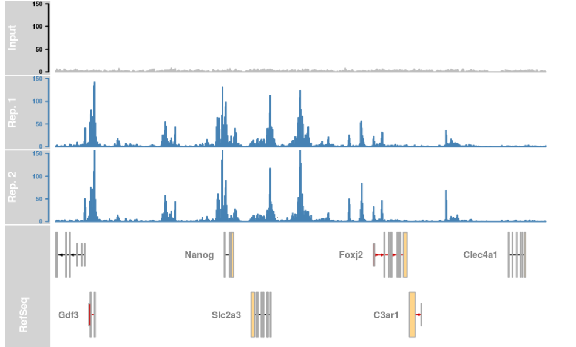
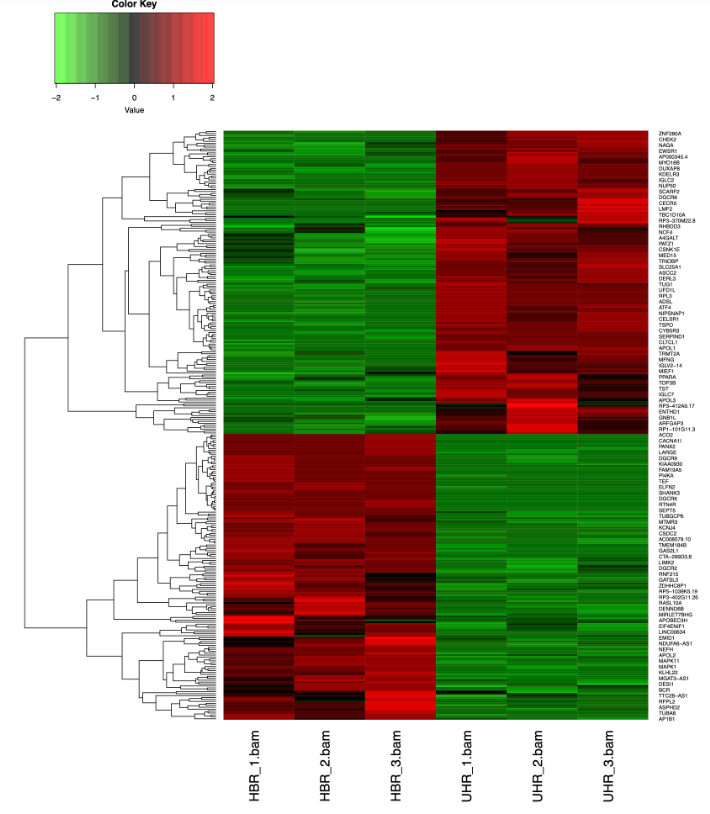
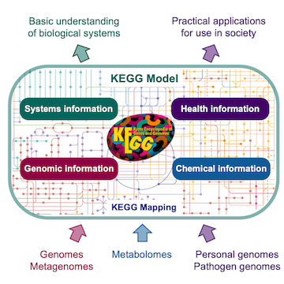

library(clusterProfiler)
library(org.Hs.eg.db)
# 1. Define DEG list (e.g., padj < 0.05 & |log2FC| > 1) and background universe
# deg_genes <- rownames(subset(res_df, padj < 0.05 & abs(log2FoldChange) > 1))
# bg_genes <- rownames(res_df) # All expressed/tested genes in the experiment
# 2. Run GO Over-Representation Analysis (Fisher's / Hypergeometric test)
ora_res <- enrichGO(
gene = deg_genes,
universe = bg_genes, # Crucial: use detected genes, not whole genome
OrgDb = org.Hs.eg.db,
keyType = "SYMBOL", # Or "ENSEMBL" / "ENTREZID"
ont = "BP", # Biological Process ("BP", "MF", "CC")
pAdjustMethod = "BH", # Benjamini-Hochberg FDR correction
pvalueCutoff = 0.05,
qvalueCutoff = 0.05
)
head(ora_res[, c("ID", "Description", "GeneRatio", "BgRatio", "p.adjust")])
dotplot(ora_res, showCategory = 10)Functional genomics
Pathway Enrichment & Biological Networks
Dr. Yu Cheng Hsu
Learning Objectives
- Identify potential ontology databases
- Analyze functional pathways of:
- ChIP-Seq
- DEG
- Describe basic protein-protein interaction networks
Functional View in Genomics
Connecting Differences to Pathways
Motivation
What are the implications of DNA-microarray/ChIP-seq results in the clinical perspective?
If 300 genes are differentially expressed, what kind of biological pathways are affected?



- I cannot lose weight because my genes involved in fat synthesis are upregulated compared to others.
Need for an Encyclopedia
We have databases to annotate each gene with its:
Location in the genome
Molecular function
Biological pathways it involves
Co-regulated/expressed genes
Properties
Databases Recording All Information
Kyoto Encyclopedia of Genes and Genomes (KEGG)
Integrates genomic, biological pathway, disease, and drug information
Pathway maps depict molecular interaction networks including metabolic, signaling, and genetic information pathways.
Gene Ontology (GO)
GO is a standardized, hierarchical ontology for annotating gene products across species
Annotates from three perspectives:
Biological process
Cellular component
Molecular functions
Example of KEGG Pathways
Example of insulin annotation and insulin secretion process in KEGG
Example of GO Pathways
Enrichment Analysis
Connecting Genes to Biological Functions
Enrichment Analysis Summarizes identified differences in genes associated with common functions.
Evolution of Functional Analysis
| Era | Method | Driving Data | Problem Solved |
|---|---|---|---|
| ~2000 | ORA (Fisher’s Exact Test) | Microarrays & GO | Summarizing a list of differentially expressed genes (DEGs) into pathways |
| 2003–2005 | GSEA | Microarrays / RNA-seq | Removing arbitrary DEG cutoffs and capturing regulation direction |
| 2010–2014 | GREAT & ChIP-Enrich | ChIP-seq | Handling distal regulatory regions and severe gene locus-length bias |
| Ongoing | Biological Networks (PPI) | Multi-omics / STRING | Moving beyond independent “bags of genes” to physical interaction topologies |
Over-Representation Analysis (ORA)
Over-Representation Analysis
- Motivation: Are biological pathways enriched (over-represented) in an experimentally-derived gene list, e.g., a list of differentially expressed genes (DEGs)?
\(N\): Background gene set
\(n\): Differentially expressed genes (DEGs)
\(M\): Genes in the pathway \(\pi\)
\(a\): Overlapping set (DEGs in pathway \(\pi\))
Problem Formulation
Problem Statement
\(100\) (\(N\)) genes detected in a microarray study
\(10\) (\(M\), G1–G10) of them belong to pathway \(\pi\)
\(40\) (\(n\), G1–G8, G11–G42) genes were differentially expressed
| DE | NOT DE | Row sum | |
|---|---|---|---|
| In \(\pi\) | 8 (\(a\)) | 2 (\(b\)) | 10 (\(M\)) |
| NOT in \(\pi\) | 32 (\(c\)) | 58 (\(d\)) | 90 (\(N-M\)) |
| Column sum | 40 (\(n\)) | 60 (\(N-n\)) | 100 (\(N\)) |
| Gene | Log2FC | Adjusted p-value |
|---|---|---|
| G1 | \(-2.8\) | \(0.010\) |
| G2 | \(2.6\) | \(0.028\) |
| G3 | \(2.5\) | \(0.031\) |
| G4 | \(2.4\) | \(0.040\) |
| \(\vdots\) | \(\vdots\) | \(\vdots\) |
| G99 | \(0.1\) | \(0.849\) |
| G100 | \(0.4\) | \(0.733\) |
Fisher’s Exact Test
If \(a:c \ge b:d\), then the gene set is enriched with pathway \(\pi\) 1
The observation of cells follows a hypergeometric distribution
Fisher’s exact test (one-tailed) computes the exact probability of observing an overlap of \(a\) or more genes by chance ^[For large cell counts, Fisher’s exact test approximates to the Chi-square test.]
\[ P = \sum_{i=a}^{M} \frac{\binom{M}{i}\binom{N-M}{n-i}}{\binom{N}{n}} = 1 - \sum_{i=0}^{a-1} \frac{\binom{M}{i}\binom{N-M}{n-i}}{\binom{N}{n}} \]
Back to Our Example
\[ P = \sum_{i=8}^{10}\frac{\binom{10}{i}\binom{90}{40-i}}{\binom{100}{40}} = 1 - \sum_{i=0}^{7} \frac{\binom{10}{i}\binom{90}{40-i}}{\binom{100}{40}} = 0.0015 \]
- At the \(\alpha = 0.05\) significance level, the differentially expressed genes are enriched in pathway \(\pi\)
| Differentially Expressed | NOT Differentially Expressed | Row Sum | |
|---|---|---|---|
| In the pathway \(\pi\) | 8 | 2 | 10 |
| NOT in the pathway \(\pi\) | 32 | 58 | 90 |
| Column Sum | 40 | 60 | 100 |
Wrap-up: ORA
Background gene list with size \(N\)
Pathway gene list with size \(M\)
Within the background gene list, \(n\) are differentially expressed and \(a\) of them are in the pathway
\[ P = \sum_{i=a}^{M} \frac{\binom{M}{i}\binom{N-M}{n-i}}{\binom{N}{n}} = 1 - \sum_{i=0}^{a-1} \frac{\binom{M}{i}\binom{N-M}{n-i}}{\binom{N}{n}} \]
- Each pathway needs to be tested once, and when testing on more than one pathway, p-value correction (e.g., Bonferroni or Benjamini-Hochberg FDR) should be applied.
Exercise Question
Consider a genome with \(30\) genes, where the functional pathway “PATH_X” contains \(5\) genes: G1, G2, G3, G4, G5. \(10\) genes (G1, G2, G3, G4, G25, …, G30) are differentially expressed genes in males, with Log2 fold change (Log2FC) and adjusted p-values as follows.
Q1 Derive the contingency table for the study above to conduct over-representation analysis. Use \(p < 0.05\) as the selection criterion.
Q2 What is the p-value for the over-representation analysis?
| Gene | Log2FC | Adjusted p-value |
|---|---|---|
| G1 | \(-2.2\) | \(0.049\) |
| G2 | \(-2.3\) | \(0.049\) |
| G3 | \(-2.8\) | \(0.010\) |
| G4 | \(2.3\) | \(0.049\) |
| \(\vdots\) | \(\vdots\) | \(\vdots\) |
| G30 | \(2.4\) | \(0.033\) |
Solution
Q1
| DE | NOT DE | |
|---|---|---|
| In the pathway | 4 | 1 |
| NOT in the pathway | 6 | 19 |
Q2
\[ \small \begin{aligned} P &= \sum_{i=4}^{5} \frac{\binom{5}{i}\binom{25}{10-i}}{\binom{30}{10}} = \frac{\binom{5}{4}\binom{25}{6}}{\binom{30}{10}} + \frac{\binom{5}{5}\binom{25}{5}}{\binom{30}{10}} \\ & = 1 - \sum_{i=0}^{3} \frac{\binom{5}{i}\binom{25}{10-i}}{\binom{30}{10}} = 1 - \biggl( \frac{\binom{5}{0}\binom{25}{10}}{\binom{30}{10}} + \frac{\binom{5}{1}\binom{25}{9}}{\binom{30}{10}} + \frac{\binom{5}{2}\binom{25}{8}}{\binom{30}{10}} + \frac{\binom{5}{3}\binom{25}{7}}{\binom{30}{10}} \biggr) \\ &= 0.03124 \end{aligned} \]
Code Example: ORA in R (clusterProfiler)
Improving on ORA in differential expression
Why do we need more advanced methods beyond Fisher’s Exact Test?
1. Threshold & Directionality Pitfalls \(\rightarrow\) Solved by GSEA
Arbitrary cutoffs: Genes at \(p = 0.049\) vs. \(0.051\) are treated completely differently; misses subtle, coordinated pathway shifts.
No regulation direction: Mixing up- and down-regulated genes loses directionality (tip: run ORA separately on up- and down-regulated DEGs).
2. Gene Independence Assumption \(\rightarrow\) Solved by Networks
- Co-expressed and interacting genes in a pathway are not statistically independent events.
Generalizing to ChIp-Seq for ORA
3. Sequencing & Length Biases \(\rightarrow\) Critical for RNA-seq & ChIP-seq
Wrong background universe (\(N\)): Always set \(N\) to genes actually expressed/detected in your experiment—not the whole genome—to avoid tissue-baseline artifacts.
Transcript length & expression bias (RNA-seq): In fragmented RNA-seq, longer or highly expressed transcripts yield more reads \(\rightarrow\) higher statistical power to pass DEG cutoffs (mitigate via
goseq, 3’-end UMI sequencing, or GSEA).Gene locus length bias (ChIP-seq): Even more severe when mapping peaks to genes \(\rightarrow\) Solved by GREAT & ChIP-Enrich.
Functional Class Scoring (GSEA)
Solving Pitfall 1: Functional Class Scoring
Motivation: Genes in the same pathway are usually co-expressed together, but they do not necessarily pass a strict DEG threshold (\(p < 0.05\), \(\vert{}\log_2\text{FC}\vert{} > 1\)).
Instead of dichotomizing genes into “DE” vs. “NOT DE”, Functional Class Scoring uses the full ranked list of all tested genes.
Gene Set Enrichment Analysis (GSEA)
Sort all genes (e.g., by \(\log_2\) fold change or test statistic)
Calculate a running sum down the sorted gene list:
Increase when a gene is in the pathway (Hit)
Decrease when a gene is not in the pathway (Miss)
Find the maximum deviation from zero (preserving sign)
Permute labels to calculate an empirical p-value

Calculate Running Sum
Consider our gene set with size \(N\), and the pathway \(\pi\) has \(M\) genes in it.
Initial running sum of enrichment score is \(ES_0 = 0\), and the normalization denominator is \(N_R = \sum_{j \in \pi} \vert{}r_j\vert{}\), where \(r_j\) is the log fold change of genes that are in the pathway \(\pi\).
Going through the ordered gene list \(n_i\):
If gene \(n_i\) is in the pathway: \(ES_i = ES_{i-1} + \frac{\vert{}r_i\vert{}}{N_R}\)
If gene \(n_i\) is NOT in the pathway: \(ES_i = ES_{i-1} - \frac{1}{N - M}\)
The final enrichment score is the maximum deviation from zero (preserving the sign):
\[ \begin{aligned} ES = & ES_{i^*}, \\ \text{where } i^* = & \arg\max_i \vert{}ES_i\vert{} \end{aligned} \]
\(ES > 0\): enriched at the top of the list (upregulated)
\(ES < 0\): enriched at the bottom of the list (downregulated)
Calculating P-values
Permutation Test: Randomly shuffle the gene labels for each expression level \(k\) times and plot the \(ES\) distribution for these \(k\) permutations. The empirical p-value is:
\[ \text{P-value} = \frac{\text{\# of times } \vert{}ES\vert{} \ge \vert{}ES_o\vert{}}{k} \]
| Gene | Log2FC |
|---|---|
| G1 | \(2.3\) |
| G2 | \(0.7\) |
| G3 | \(2.6\) |
| G4 | \(1.4\) |
| G5 | \(1.2\) |
| G6 | \(0.1\) |
| Gene | Log2FC |
|---|---|
| G4 | \(2.3\) |
| G2 | \(0.7\) |
| G6 | \(2.6\) |
| G1 | \(1.4\) |
| G5 | \(1.2\) |
| G3 | \(0.1\) |
| Gene | Log2FC |
|---|---|
| G4 | \(2.3\) |
| G1 | \(0.7\) |
| G6 | \(2.6\) |
| G2 | \(1.4\) |
| G5 | \(1.2\) |
| G3 | \(0.1\) |
Example 1
Consider a DEG list for \(8\) genes \(\{G1, \dots, G8\}\), where the functional pathway “PATH_A” contains \(4\) genes \(\{G1, G2, G3, G4\}\). With the readings on the right, please calculate the enrichment score of PATH_A on this array.
| Gene | Log2FC |
|---|---|
| G1 | \(2.3\) |
| G2 | \(0.7\) |
| G3 | \(2.6\) |
| G4 | \(1.4\) |
| G5 | \(1.2\) |
| G6 | \(0.1\) |
| G7 | \(0.3\) |
| G8 | \(0.6\) |
Example 1 Solution
| Rank | Gene | Hit/Miss | Score |
|---|---|---|---|
| 1 | G3 | Hit | \(2.6/7\) |
| 2 | G1 | Hit | \(2.3/7\) |
| 3 | G4 | Hit | \(1.4/7\) |
| 4 | G5 | Miss | \(-1/4\) |
| 5 | G2 | Hit | \(0.7/7\) |
| 6 | G8 | Miss | \(-1/4\) |
| 7 | G7 | Miss | \(-1/4\) |
| 8 | G6 | Miss | \(-1/4\) |
Score deducted if the gene is not in the pathway: \(\frac{1}{8-4} = \frac{1}{4}\)
Normalized term (\(N_R\)) if the gene is in the pathway: \(2.6 + 2.3 + 1.4 + 0.7 = 7\)
\(ES\):
\[ \begin{aligned} ES &= \frac{2.6}{7} + \frac{2.3}{7} + \frac{1.4}{7} \\ &= 0.9 \quad (\text{upregulated}) \end{aligned} \]
Example 2
Consider a DEG list for \(8\) genes \(\{G1, \dots, G8\}\), where the functional pathway “PATH_B” contains \(5\) genes \(\{G1, G2, G3, G4, G5\}\). With the readings on the right, please calculate the enrichment score of PATH_B on this array.
| Gene | Log2FC |
|---|---|
| G1 | \(-2.0\) |
| G2 | \(-0.1\) |
| G3 | \(-2.3\) |
| G4 | \(-1.7\) |
| G5 | \(-0.9\) |
| G6 | \(0.1\) |
| G7 | \(0.3\) |
| G8 | \(0.6\) |
Example 2 Solution
| Rank | Gene | Hit/Miss | Score |
|---|---|---|---|
| 1 | G8 | Miss | \(-1/3\) |
| 2 | G7 | Miss | \(-1/3\) |
| 3 | G6 | Miss | \(-1/3\) |
| 4 | G2 | Hit | \(0.1/7\) |
| 5 | G5 | Hit | \(0.9/7\) |
| 6 | G4 | Hit | \(1.7/7\) |
| 7 | G1 | Hit | \(2.0/7\) |
| 8 | G3 | Hit | \(2.3/7\) |
Score deducted if the gene is not in the pathway: \(\frac{1}{8-5} = \frac{1}{3}\)
Normalized term (\(N_R\)) if the gene is in the pathway:
\[ \begin{aligned} \small \vert-2.0\vert+ & \vert-0.1\vert+\vert-2.3\vert + \\ \vert-1.7\vert + &\vert-0.9\vert = 7 \end{aligned} \]
- \(ES\):
\[ \begin{aligned} ES &= -\frac{1}{3} - \frac{1}{3} - \frac{1}{3} \\ &= -1.0 \quad (\text{downregulated}) \end{aligned} \]
Comparison of ORA and GSEA
ORA
Uses a hard threshold (DEG cutoff)
Only requires a list of genes of interest (plus background universe)
Computationally fast
Does not inherently determine regulation direction
GSEA
Threshold-free (uses the full ranked gene list)
Requires a continuous ranking metric (e.g., \(\log_2\text{FC}\) or test statistic)
Computationally more expensive (permutation test)
Determines regulation direction via the sign of \(ES\) / \(NES\)
Different results in ORA and GSEA often imply subtle, coordinated changes near the boundary of an arbitrary cut-off (e.g., many pathway genes with \(p \approx 0.051\)).
Code Example: GSEA in R (clusterProfiler)
library(clusterProfiler)
library(org.Hs.eg.db)
# 1. Create a named numeric vector of ALL tested genes, sorted decreasingly by log2FC
# gene_list <- res_df$log2FoldChange
# names(gene_list) <- rownames(res_df)
# gene_list <- sort(na.omit(gene_list), decreasing = TRUE)
# 2. Run Gene Set Enrichment Analysis (no hard DEG cutoff needed)
gsea_res <- gseGO(
geneList = gene_list,
OrgDb = org.Hs.eg.db,
keyType = "SYMBOL",
ont = "BP",
minGSSize = 15,
maxGSSize = 500,
pvalueCutoff = 0.05,
pAdjustMethod = "BH",
verbose = FALSE
)
# NES > 0: upregulated pathway; NES < 0: downregulated pathway
head(gsea_res[, c("ID", "Description", "NES", "p.adjust")])
gseaplot2(gsea_res, geneSetID = 1, title = gsea_res$Description[1])Enrichment in the Sequence (ChIP-seq)
Solving Pitfall 2: Why Not Just Run ORA on ChIP-seq?
Can we simply map each ChIP-seq peak to its nearest gene and run Fisher’s Exact Test (ORA)?
In theory, yes—the \(2 \times 2\) contingency table is identical (genes with \(\ge 1\) peak vs. genes in pathway \(\pi\)).
In practice, it fails severely because Fisher’s Exact Test assumes every gene has an equal probability of receiving a peak by chance:
Housekeeping genes live in gene-dense regions (tiny regulatory territory: \(\sim 5\text{--}10\text{ kb}\)).
Developmental & neural genes sit in vast “gene deserts” with distal enhancers (huge regulatory territory: \(> 500\text{ kb} \sim 1\text{ Mb}\)).
Even completely random peaks will disproportionately land on long gene loci, causing massive false positives in FET.
Genomic Regions Enrichment of Annotations Tool (GREAT)
- Motivation: Do cis-regulatory elements (ChIP-seq peaks) associate with specific pathways, accounting for the length of regulatory domains?

Problem Formulation

Given a \(1000\text{ bp}\) sequence
From the existing database, \(600\text{ bp}\) (located in the figure) is annotated with the functional pathway \(\pi\)
ChIP-seq identified \(6\) enriched regions bound by protein; among them, \(5\) are in the annotated region \(\pi\)
Question: If the ChIP-seq identified regions occur randomly, what is the probability that ChIP-seq identified regions fall into the regulatory domain \(\pi\)?
Binomial Test
Analogy: You are flipping an unfair coin
Chance of having a head: \(0.6\)
Times you flip: \(6\)
Heads you get: \(5\)
ChIP-seq: Identified Region
Chance to be in the regulatory domain: \(p = \frac{\text{Annotated length}}{\text{Total sequence length}} = \frac{600}{1000}\)
Number of genomic regions identified: \(n = 6\)
Number of genomic regions falling into the annotated area: \(k = 5\)
The probability of getting exactly \(k\) hits out of \(n\) with probability \(p\):
\[ P(X = k) = \binom{n}{k}(p)^k(1-p)^{n-k} \]
Back to Our Example
- We can derive the p-value (probability) to test: How likely is it to get at least \(k\) annotations in the regulatory region out of \(n\) attempts, if the ChIP-seq peaks occur randomly?
\[ \text{p-value} = P(X \ge k) = \sum_{i=k}^{n}\binom{n}{i}(p)^i(1-p)^{n-i} \]
In our example, it will be:
\[ P(X \ge 5) = \binom{6}{5}(0.6)^5(1-0.6)^{1} + \binom{6}{6}(0.6)^6(1-0.6)^{0} = 0.23 \]
For a given significance level \(\alpha\) (typically \(0.05\)), if \(\text{p-value} < \alpha\) (or adjusted p-value / \(\text{FDR} < 0.05\) when testing multiple pathways), we conclude that the regulatory element is enriched in the pathway \(\pi\).
Wrap-up: Enrichment Analysis of Cis-Regulatory Regions
For a sequence with length \(N\) with \(K_\pi\) bp annotated with pathway \(\pi\)
ChIP-seq selected \(n\) genomic regions and \(k_\pi\) of them fall into the annotation of pathway \(\pi\)
\(p_\pi = \frac{K_\pi}{N}\) is the probability of selecting a base pair annotated with \(\pi\) when selecting a single base pair uniformly from all base pairs in the genome
\[ \text{p-value} = P(X \ge k_\pi) = \sum_{i=k_\pi}^{n}\binom{n}{i}(p_\pi)^i(1-p_\pi)^{n-i} \]
- Each pathway needs to be tested once, and when testing on more than one pathway, p-value correction (e.g., Bonferroni or Benjamini-Hochberg FDR) should be applied.
Exercise Question
On a sequence with length \(100\), with \(14\) bp annotated with the pathway multicellular organismal development
ChIP-seq on this sequence showed that \(10\) enriched regions are bound by protein in older adults compared to young adults; among them, \(6\) fall into the annotated regions
Q1 What is the p-value of the binomial test that at least \(6\) out of \(10\) fall into the annotated regions?
\[ \small P(X \ge 6) = \sum_{i=6}^{10}\binom{10}{i}(0.14)^i(1-0.14)^{10-i} = 0.00095 \]
Q2 Given the p-value, is the protein enriched in the pathway multicellular organismal development at the \(\alpha = 0.05\) significance level?
Yes, since \(0.00095 < 0.05\), the protein is enriched in the pathway multicellular organismal development.
GREAT Analysis in R
GREAT’s binomial and hypergeometric tests are implemented in the rGREAT Bioconductor package:
# Install rGREAT if needed
if (!requireNamespace("BiocManager", quietly = TRUE)) install.packages("BiocManager")
if (!requireNamespace("rGREAT", quietly = TRUE)) BiocManager::install("rGREAT")
library(rGREAT)
library(GenomicRanges)
# Example: load peak coordinates (chr, start, end) as a GRanges object
# peaks_gr <- GRanges(seqnames = df$chr, ranges = IRanges(df$start, df$end))
# Run local GREAT analysis against GO Biological Process (hg38)
res_great <- great(
gr = peaks_gr,
gene_sets = "GO:BP",
tss_source = "hg38"
)
# Extract enrichment table (includes BOTH binomial & hypergeometric p-values)
tb <- getEnrichmentTable(res_great)
head(tb[, c("id", "description", "fold_enrichment", "p_adjust", "p_adjust_hyper")])FET vs. GREAT (Binomial)
How do ChIP-seq enrichment methods balance gene locus length against peak clustering?
| Method | Unit | Locus Length Handling | Key Limitation |
|---|---|---|---|
| Fisher’s Exact Test (ORA) | Gene (\(\ge 1\) peak) | None (assumes equal probability per gene) | Severe false positives for pathways with long gene loci (e.g., neural/developmental genes in gene deserts) |
| GREAT (Binomial Test) | Peak count | Linearly proportional to locus length | Assumes peaks are independent; a few genes with many peaks can inflate significance; can over-correct TSS-proximal TFs |
Improvement on ChIp-Seq
ChIP-Enrich
- Unit: Gene (\(\ge 1\) peak)
\[ \small \log\left(\frac{\pi_i}{1 - \pi_i}\right) = \beta_0 + \beta_1 g_i + f(\log_{10} L_i) \]
Empirical smoothing spline \(f(\log_{10} L_i)\): Fits a dataset-specific curve via logistic regression, controlling false positives across both TSS-proximal and distal-binding factors
- Practical takeaway: GREAT recommends requiring significance in both the binomial and hypergeometric (FET) tests; ChIP-Enrich (Welch et al. (2014)) unifies this into a single gene-level logistic regression model.
Code Example: ChIP-Enrich in R
To empirically adjust for locus length bias (Welch et al. (2014)), use the chipenrich library:
# Install packages safely (check one package at a time)
if (!requireNamespace("BiocManager", quietly = TRUE)) install.packages("BiocManager")
for (pkg in c("chipenrich", "chipenrich.data")) {
if (!requireNamespace(pkg, quietly = TRUE)) BiocManager::install(pkg)
}
library(chipenrich)
data(peaks_E2F4, package = "chipenrich.data")
# Run ChIP-Enrich (logistic regression + locus-length smoothing spline)
results <- chipenrich(
peaks = peaks_E2F4, # Data frame or file path to a BED/txt file
genome = "hg19", # Reference genome (e.g., "hg19", "hg38", "mm10")
genesets = "GOBP", # Gene sets to test (e.g., "GOBP" for GO Biological Process)
locusdef = "nearest_tss", # Defines the region assigned to each gene
qc_plots = FALSE, # Set to TRUE to generate diagnostic spline plots
out_name = NULL, # Provide a prefix (e.g., "E2F4_run") to save output files
n_cores = 1 # Number of cores for parallel processing
)ChIP-Enrich Results
results$results: The primary output. It contains the Gene Set ID, description, p-value, False Discovery Rate (FDR), effect size (Status: enriched vs. depleted), and the specific genes driving the enrichment.results$peaks: A detailed mapping showing exactly which gene locus each individual peak was assigned to.results$peaks_per_gene: A summary table showing the aggregate count of peaks assigned to each specific gene.
Biological Networks
Pitfall 3: Complexity of Interactions
ORA, GSEA, and ChIP-Enrich treat pathways as flat sets of independent genes. In reality, proteins physically interact in complex networks beyond static KEGG diagrams.

Reasons
Proteins could interact with each other across different pathways (e.g., some interactions relate to insulin resistance rather than insulin secretion, so a single KEGG map does not show them)
Scientific advancements and experiments:
Gene co-expression
Co-occurrence
Getting Networks
Getting Protein-Protein Interaction (PPI) Network
STRING: A database to document interactions between proteins
Interactions:
- Physical and functional associations
Sources:
Computational prediction
Knowledge transfer between organisms
Databases
Definition of the Network
\[ \begin{aligned} G &= (V, E) \\ V &= \text{All the nodes (Proteins)} \\ E &= \{(s, e)\} \quad \text{All the edges from } s \text{ to } e \text{ (interactions between two)} \end{aligned} \]
Importance of a Node

Degree
An intuitive measurement of the importance of a node
Number of edges connected to the node
\[ \text{Degree}(i) = \sum_{j=1}^{\vert{}V\vert{}} e_{ij} \]
Degree of:
GNAT2: \(7\)
TEX28: \(2\)
Local Community of a Network
Clustering Coefficient
- How many friends of friends are also my friends (Triangles)
\[ \small \begin{aligned} \text{Clustering coefficient}(i) &= \frac{L_i}{\frac{k_i(k_i-1)}{2}} \\ &= \frac{2L_i}{k_i(k_i-1)} \end{aligned} \]
\(L_i\): Number of triangles including node \(i\)
\(k_i\): Number of nodes connected to node \(i\)
Clustering coefficient of:
- GNAT2: \(\frac{7 \times 2}{7 \times 6} = 0.33\), TEX28: \(0\)
Why They Are Important
Degree
Importance of a protein
Identifying potential drug targets
Clustering Coefficient
Identifies potential clusters (sub-functions)
Identifying potential drug targets
Application of PPI
Exploring disease mechanisms
Drug discovery

Wrap Up
- Connecting sequencing results to more informative clinical information:
- Enrichment in ChIP-Seq and DEG
- PPI
Bibliography Notes
Hokusai, Katsushika. 1830. Under the Wave Off Kanagawa. Woodblock print; ink and color on paper. The Metropolitan Museum of Art.
Khatri, Purvesh, Marina Sirota, and Atul J Butte. 2012. “Ten Years of Pathway Analysis: Current Approaches and Outstanding Challenges.” PLoS Computational Biology 8 (2): e1002375.
Subramanian, Aravind, Pablo Tamayo, Vamsi K Mootha, Sayan Mukherjee, Benjamin L Ebert, Michael A Gillette, Amanda Paulovich, et al. 2005. “Gene Set Enrichment Analysis: A Knowledge-Based Approach for Interpreting Genome-Wide Expression Profiles.” Proceedings of the National Academy of Sciences 102 (43): 15545–50.
Welch, Ryan P, Chee Lee, Paul M Imbriano, Snehal Patil, Terry E Weymouth, R Alex Smith, Laura J Scott, and Maureen A Sartor. 2014. “ChIP-Enrich: Gene Set Enrichment Testing for ChIP-Seq Data.” Nucleic Acids Research 42 (13): e105–5.